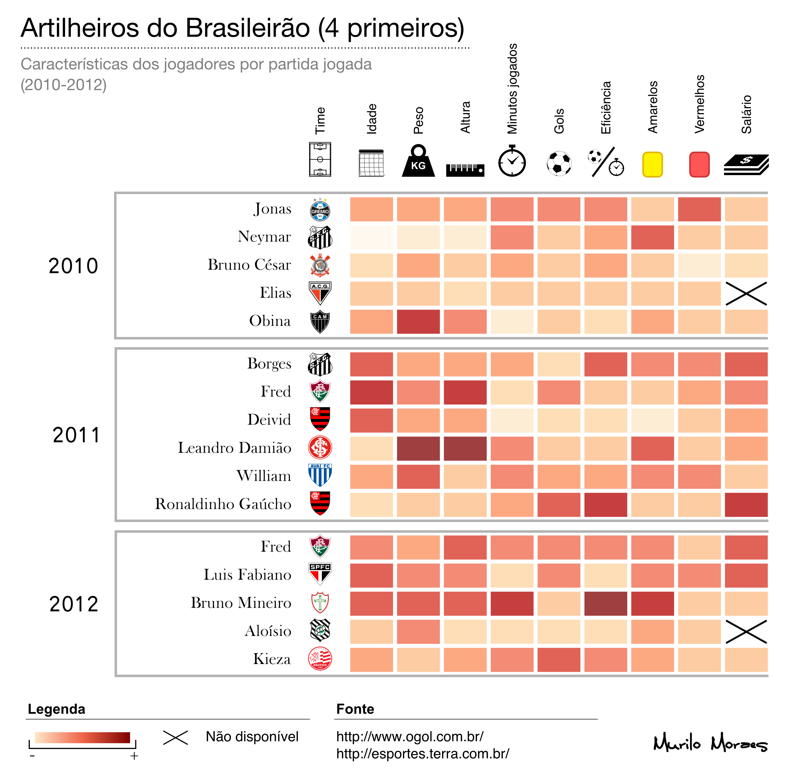

Futebol / Arquivo
Artilheiros do Campeonato Brasileiro (2010-2012)
Compare o perfil dos principais goleadores do Brasileirão de 2010, 2011 e parte de 2012.
Publicação original
Particularmente, não sou um profundo conhecedor de futebol. Mas guardei a vontade de fazer um infográfico sobre esporte quando aprendi a criar um heatmap no R a partir de um post do Flowing Data sobre os atletas da NBA. Como em diversas áreas, o Brasil ainda não é um primor na quantidade nem no acesso aos dados sobre futebol. Mas consegui juntar rapidamente algumas informações sobre os quatro primeiro artilheiros do brasileirão (há casos de empate e por isso mais de quatro jogadores ). Cada coluna apresenta uma característica e a intensidade da cor está vinculada ao quanto determinado jogador se diferencia, nesta variável, em relação aos demais listados. Em relação ao campeonato de 2012, usei os dados disponíveis até o momento (31/10/2012).
Fiz o heatmap no R e ajustei o infográfico no Inkscape.

